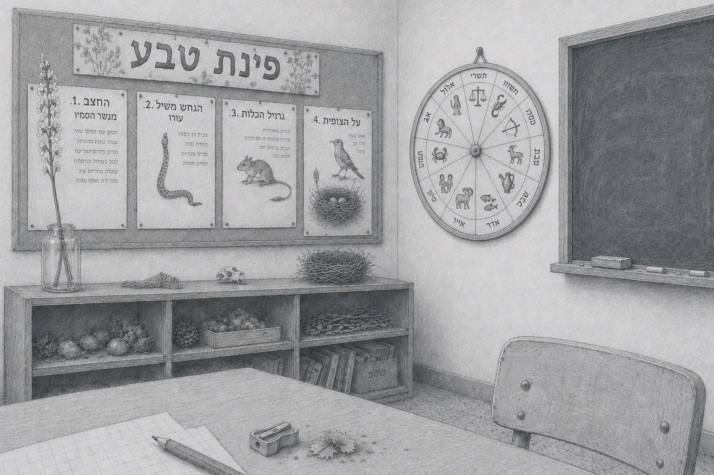

מה אומרים על הספר
ביקורות, הופעות בתקשורת וקולות מן הקהילה

יומן חוויות אישי ומרגש. אני ממליץ בחום על הספר המיוחד הזה לכל מי שמעוניין להכיר את החיים בחברה הקיבוצית מנקודת מבטה של ילדה קטנה, מוכשרת ורגישה למתרחש סביבה.
כל אחד מהם [הסיפורים] – פנינה של רגש, מחשבה והבנה. הקריאה שלו הסבה לי עונג צרוף.
רונית בלנרו־אדיב, בוגרת הלינה המשותפת, חלתה בסרטן ובחרה לכרות את השדיים ולא לעבור שחזור. בספרה "עיניים גדולות זה לא טוב" היא מספרת על החיים בקיבוץ מנקודת מבטה של ילדה. "ריחמתי על עצמי, אבל לא נתקעתי בזה, קמתי כמו 'נחום־תקום' ועל זה יש לי המון תודה לחינוך הקיבוצי", היא אומרת מביתה בניו זילנד
ספר רגיש — ברמה שמשפטים מסוימים עשו לי צמרמורת ולחלוחית בעיניים — כתוב באופן חכם, קולח ומרתק. ממליצה מאוד!
רומן צלול ומרגש, פוקח עיניים וצובט בכנותו.
אהבתי אותו לא בגלל נוסטלגיה אלא בגלל האמת שבו. הוא פשוט פתח דלת לעולם שחשבתי שאני זוכר, והראה לי אותו דרך שפה שעדיין מהדהדת בי.
נכתב ברגישות ונוסטלגיה מבורכת. הערכתי במיוחד את חוסר השיפוטיות שבה נכתב הספר — לא כתב ביקורת על החברה הקיבוצית, אלא פשוט את החוויות כפי שקרו.
אני רוצה לגדול לא כדי להיות גדולה, פשוט כדי לא להיות קטנה. על הקטנים מחליטים הגדולים, ואת הקטנים לא שומעים.
כבר בפרק הראשון בכיתי. ספר כתוב היטב, המתאר בצורה בלתי שיפוטית חלק בארץ ישראל שאינו קיים בימינו. ממליצה עליו בחום.
נהנתי מאוד מהספר. הקריאה זרמה, הדפים התחלפו מאליהם וחשפו טפח מהחיים בקיבוץ. הכתיבה איכותית וזורמת — השפה כמו שפת דיבור של ילדה בת שבע.
קראתי בנשימה אחת ובכיתי. חזרתי לבית הילדים שלי.
ק׳, בת קיבוץ בעמק
סוף-סוף מישהי כתבה את מה שלא ידעתי לומר.
י׳, בן-קיבוץ השומר הצעיר
נתתי את הספר לאמא שלי. דיברנו עליו שעות.
ד׳, דור שני בקיבוץ